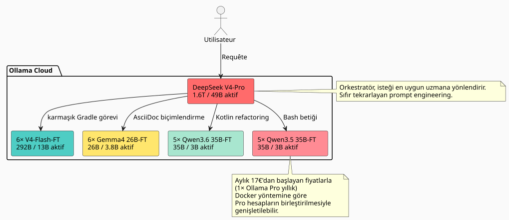

Claude ve GPT'den 27× ile 45× daha etkili: ince ayarlı 23 yapay zeka uzmanından oluşan bir filo piyasayı nasıl domine ediyor
Yayınlandı: 11 May 2026
Günlük yazılım geliştirme süreçlerinde bir LLM kullandığınızda, her zaman aynı duvara toslarsınız: model sizin kod tabanınızı tanımaz. Şu veya bu deseni kullandığınızı bilmezhttps://fr.wikipedia.org/wiki/Graphe_orient%C3%A9_acyclique[DAG], nasıl bir Gradle konvansiyonu varsa, sizin …'larınızda da öyle bir epistemik katmanlaşma vardırhttps://fr.wikipedia.org/wiki/AsciiDoc[.adoc]Bu yüzden ona bağlam enjekte ediyoruz, tekrarlıyoruz, düzeltiyoruz, yinelemeler yapıyoruz. Ve zaman — ve para — akıp gidiyor.
Bu yüzden soruyu doğrudan sordum: workspace’im üzerinde, her seferinde açıklama yapmaya gerek kalmadan benim stilimde kod yazabilen, fine-tune edilmiş bir model ekibi ne kadara mal olurdu? Ve en önemlisi: Bu yaklaşım klasik tescilli çözümlerle — Claude, GPT, Gemini, Grok — nasıl kıyaslanır?
Cevap beni şaşırttı. Hayal ettiğimden çok daha az. Ve sektör devlerine karşı maliyet/verimlilik oranı akıl almaz düzeyde. İşte tüm detaylar.
Sorun şu: neden RAG değil de fine-tune?
RAG güzel. Bilgi grafiğim ve epistemik bölmelendirmem çalışıyor. Ancak RAG’in temel bir kusuru var: her sorguda ilgili bağlamı yeniden enjekte etmeniz gerekir. Prompt’unuz uzuyor, gecikmeniz artıyor ve model pattern’larınızı asla içselleştirmiyor — onları her seferinde harici bir belge gibi okuyor.
Fine-tuning ise kas hafızasıdır. Model, senin yazdığını bilirbuild.gradle.kts`via aracılığıyla kaydedilen görevlerle`tasks.register`, ki senin`AGENTS.adoc`standart bir sözdizimi izlediklerini ve workspace’inin borough’lar şeklinde yapılandırıldığını biliyor. Hatırlatılmasına gerek yok.
|
Fine-tune, RAG’ın bir alternatifi değildir. Bu, tamamlayıcı bir katmandır. RAG, sık değişen veriler (loglar, biletler, güncel commit’ler) için yerinde kalmaya devam eder. Fine-tune ise uzun vadeli yapısal ve stilistik bilgi içindir. |
Fikir: tek bir model değil, bir uzman filosu
Tüm çalışma alanımda ince ayar yapılmış tek bir model zaten iyi. Ancak bu optimal değil. Çalışma alanım çok farklı alanları kapsıyor:
-
Gradle eklentileri (Kotlin, konvansiyon eklentileri, kompozit yapılar)
-
DAG Motoru (Kotlin, planlama, yürütme)
-
LLM Ajanları (Python, LangChain4j, RAG)
-
Mimari dokümantasyon (AsciiDoc, yönetişim)
-
Infra/DevOps (Docker, GitHub Actions, CI/CD)
Tek bir model her yerde iyi, ancak hiçbir yerde mükemmel olmalıdır. Çözüm mü? Birözelleşmiş model filosu, her bir isteği doğru uzmana yönlendiren bir orkestratör ile.

Toplam filo:1 orkestratör + 22 uzman = 23 model. Ve aylık çıkarım maliyeti?17€/ayyıllık bir Ollama Pro aboneliği — kotalar aşıldığında, çoklu hesap Docker yöntemimde gösterildiği gibi hesapları birleştirerek genişletilebilir. 17€'dan başlanır ve gerçek ihtiyaca göre kademe başına 20€ eklenir. İsraf yok.
Kod tabanı büyüteç altında: 7.900 dosya, 144.000 satır
Eğitim maliyetini tahmin etmeden önce, neyin eğitileceğini bilmek gerekir. Git tarafından yoksayılan her şeyi titizlikle hariç tutarak çalışma alanımı denetledim:
----
build/ out/ node_modules/ runtimes/ .gradle/ dist/
target/ venv/ __pycache__/ .cache/ .tox/
----
Sadece takip edilen dosyalar için sonuç şöyledir:
[cols="2,2"]
|===
|Metrik |Değer
|İzlenen kaynak dosyalar |**7 896** |Kod satırları (LOC) |**143 805** |Git Depoları |**26** |Temel diller |Kotlin (1 903), AsciiDoc (2 765), Python (5 029)
|===
[IMPORTANT]
====
Bu 5.000'den fazla Python dosyası şunları içerir:`runtimes/`not defterler ve yardımcı betikler. Uygulama çekirdeği (Gradle eklentileri, DAG motoru, ajanlar) ağırlıklı olarak Kotlin ve AsciiDoc ile yazılmıştır.
====
Bu kütleden yola çıkarak, şu kadar sentetik bir veri seti oluşturabileceğimi tahmin ediyorum:**~170 milyon token**bir eğitici LLM aracılığıyla (kod tabanının talimat/yanıt çiftlerine damıtılması).
=== Uzman türüne göre veri seti detayı
[source,text]
----
Dataset maître (généraliste V4-Flash) : 50M tokens
Expert Gradle/Build : 15M tokens
Expert Kotlin/DAG : 15M tokens
Expert AsciiDoc/Gouvernance: 15M tokens
Expert Agent/LLM/Python : 15M tokens
Expert Infra/CI-CD : 15M tokens
Micro-experts Qwen/Gemma : ~5M tokens chacun
----
== Model seçimi: %100 MoE, sıfır dense
Mimarinin gerçekten verimli hale geldiği yer burasıdır.
*Yoğun* (dense) bir model, her token için tüm ağırlıklarını etkinleştirir. Bir *MoE* (Mixture of Experts - Uzmanların Karışımı) modeli ise parametrelerinin yalnızca bir kısmını etkinleştirir. Çıkarım — ve ince ayar (fine-tuning) — maliyeti, parametrelerle orantılıdır**etkinleştirildi**, ayarlara değil**depolanmış**Lütfen çevrilecek metni sağlayın.
Ollama Cloud'da günümüzde piyasanın MoE konusunda neler sunduğuna bakalım:
[cols="3,2,2,1,3"]
|===
|Model |Toplam parametre sayısı |Etkinleştirildi |Etkinleştirme |Ollama Cloud
|DeepSeek V4-Pro |1.6T |49B |3.1% |✅ ana dil |DeepSeek V4-Flash |292B |13B |4.5% |✅ yerel |Gemma 4 26B-A4B |26B |3.8B |14.6% |✅ yerel |Qwen3.6-35B-A3B |35B |3B |8.6% |❌ (henüz entegre edilmedi) |Qwen3.5-35B-A3B |35B |3B |8.6% |✅ yerli
|❌ Qwen3.5-27B |27B |27B |%100 yoğun |elenmiş |❌ Qwen3.5-4B/9B |4B/9B |4B/9B |%100 yoğun |elenmiş |❌ Gemma 4 31B |31B |31B |%100 yoğun |elenmiş
|🧪 Gemma 4 E2B/E4B |5B/8B |5B/8B |%100 yoğun |doğrulama hattı
|===
[CAUTION]
====
Aktivasyon oranı ayırt edici kriterdir. Bir Gemma 4 26B-A4B, 26B parametresinin yalnızca 3.8B'sini aktif hale getirir; bu, benzer kodlama ajanı performansları için (LiveCodeBench v6 üzerinde %77.1'e karşı %80) yoğun bir 27B'den 7 kat daha azdır.
====
=== Yoğun modelleri neden bırakıyorum
İstisna: Gemma 4 E2B ve E4B. Apache 2.0 lisanslı olan bu iki model, bir eğitim hattını (training pipeline) düşük maliyetle test etmek ve doğrulamak için mükemmeldir. E2B üzerinde 2-3 saatlik bir çalıştırma (run) 5 dolardan daha az maliyetlidir; eğer veri seti veya hiperparametreler hatalıysa, bunu birkaç dolara anlamış oluruz. Pipeline oturduktan sonra, ultra mikro görevler (basit yeniden formatlama, ikili sınıflandırma) için bile kullanılabilirler. Ancak ana filonun uzmanları için MoE'de kalmaya devam ediyorum. İşte nedeni:
Ama sadece bununla sınırlı değil: hassas anonimleştirme uzmanları Gemma 4 E2B/E4B
[NOTE]
====
Google, bu küçük modelleri yerel tool calling konusunda rekabetçi olacak şekilde tasarladı — fonksiyon çağırmayı, regex kullanmayı ve desen aramayı biliyorlar. Anonimleştirme örnekleri (e-postalar, token'lar, UUID'ler, dosya yolları) üzerinde fine-tune edildiklerinde, şunlara dönüşürler:**veri seti anonimleştiriciler**ultra hızlıdırlar. Onlara düz bir metin bloğu veririz, onlar da çağırır`sed`/`regex`bir tool call aracılığıyla ve temizlenmiş bloğu döndürürler. Çıkarım maliyeti çok düşüktür: 5B aktif parametre, tek bir giriş seviyesi GPU'ya sığar. Bu modeller alan uzmanları değildir — bunlar**vasıflı işçiler**veri kümesi üretim zincirinde.
====
* Eğitim VRAM'i (QLoRA'da bile) şunlarla orantılıdır:**Toplam 27B**
* Eğitim süresi şunlarla orantılıdır:**27B etkinleştirildi**
Qwen3.6-35B-A3B` (MoE) ile karşılaştıralım:
[cols="3,2,2,2"]
|===
| |Qwen3.5-27B (dense) |Qwen3.6-35B-A3B (MoE) |Oran
|VRAM QLoRA |~55 GB |~35 GB |1.6× |GPU-saatleri (8M tok) |~12sa |~4sa |**3×** |İnce ayar başına maliyet |~$24 |~$8 |**3×** |SWE-bench Doğrulanmış |75.0% |73.4% |karşılaştırılabilir
|===
MoE, %5'lik bir performans farkıyla agent-coding için eğitilmesi 3 kat daha ucuzdur. 22 uzman üzerinden bakıldığında, fark binlerce euroyu bulmaktadır.
== Eğitim tahmini: 811 H100-saat
Model eğitim maliyetini, yukarıda açıklanan veri setleri ile 4-bit QLoRA kullanarak model bazında detaylandırdım.
=== Hafif Mikro-uzmanlar MoE (3-3.8B etkin)
Bu modeller çalışma başına 1 H100 (80 GB) gerektirir. Modelin Q4 formatındaki VRAM kullanımı yaklaşık 13-18 GB'dır, bu da LoRA optimize edici durumları ve aktivasyonlar için geniş bir alan bırakır.
[cols="4,2,3,2"]
|===
|Model |Çalıştırma sayısı |GPU-h/run |Toplam GPU-saat
|Gemma 4 26B-A4B-FT |6 |3.5 h |**21 s** |Qwen3.6-35B-A3B-FT |5 |4.0 h |**20 sa** |Qwen3.5-35B-A3B-FT |5 |4.0 h |**20 sa** |*Mikro ara toplam* | | |*61 h*
|===
=== Yürütme Birimleri V4-Flash (13B etkin / 292B depolanan)
DeepSeek V4-Flash özel bir durumdur. Token başına yalnızca 13B aktif olsa bile, Q4 formatındaki tam model ~142 GB ağırlığındadır — eğitim sırasında tüm uzmanların VRAM'de olması gerekir. Bu nedenle**3× H100**konforlu olmak için çalışma başına.
[cols="4,2,3,3,2"]
|===
|Model |Veri kümesi |GPU'lar |Saatler |Toplam GPU-saat
|Genel amaçlı V4-Flash-Base |50M tok |3× H100 |50 h |**150 sa** |V4-Flash uzmanı ×5 |15M tok |3× H100 |40 h |**600 s** |*Yöneticiler ara toplamı* | | | |*750 h*
|===
[cols="3,2,1"]
|===
|**TOPLAM** | |**811 H100-h**
|===
[NOTE]
====
Karşılaştırma yapmak gerekirse, V4-Flash'ın tam ince ayarı (QLoRA olmadan, tüm ağırlıklar) sadece 6 model için ~4 000 H100-h'a mal olurdu. QLoRA maliyeti 5'e böler. Bu ölçekte projeyi ekonomik olarak uygulanabilir kılmanın tek yolu budur.
====
=== GPU Ücretleri: Mayıs 2026'da kim, neyi kiralıyor
Başlıca H100 kiralama şirketlerini kıyasladım. 811 saat için liste fiyatı.
[cols="3,2,2,2"]
|===
|Kiralayan |$/H100·s |Toplam 811sa |Güvenilirlik
|**Vast.ai spot** |$1.60 |**$1 298** |★★☆ kesilebilir |**Crusoe Cloud** |$2.00 |**$1 622** |★★★★ güvenilir veri merkezi |FluidStack |$1.98 |$1 606 |Lütfen çevrilecek metni sağlayın. |TensorDock |$1.80 |$1 460 |★★☆ |RunPod |$2.29 |$1 857 |★★★ iyi bir uzlaşma |CoreWeave |$2.25 |$1 825 |★★★★ şirket |Lambda Labs |$2.49 |$2 019 |★★★★ premium
|===
[TIP]
====
Vast.ai spot en ucuz olanı ancak çalışmaların her an kesintiye uğrayabilir. Eğitim (training) için bu riskli. Saatlik 2,00$ olan Crusoe, en iyi güvenilirlik/fiyat oranına sahip. Vast'a kıyasla 324$'lık ek maliyet, kafa rahatlığına değer.
====
=== Wall-clock: her şeyi eğitmek ne kadar sürer?
Tek bir 3× H100 düğümü ile, 31 çalışma (1 genel + 30 uzman) yaklaşık olarak**12 gün**sıralı olarak. Eğer paralel olarak 2 düğüm kiralarsanız, bu şu değere düşer:**6 gün**Lütfen çevrilecek metni sağlayın.
Pratikte, mikro uzmanlar ayrı düğümlerde (her biri 1 H100) çalışabilirken, V4-Flash'lar 3× H100 düğümünü işgal eder. Akıllı bir planlama ile:Nœud A (3× H100) : V4-Flash généraliste → V4-Flash experts ×5 (11 jours) Nœud B (1× H100) : Gemma 4 26B ×6 → Qwen 36 ×5 → Qwen 35 ×5 (6 jours)
7 günlük kiralama, her şey dahil.
Çıkarım: Ollama Cloud’da aylık 17€'dan başlayan fiyatlarla 23 model
Mimarinin en zarif kısmı budur.
Ollama Cloud, özel modeller yüklemeye olanak tanır (Pro plan özelliği). Fine-tune edilmiş 22 modelim şuraya pushlandı:`.gguf`Ollama alanımda, özel olarak işaretlenmiş ve standart API üzerinden erişilebilir durumdalar.

17€/ay ile başlıyoruz, gerekirse scale ederiz
Ollama Pro planı (yıllık ödemede aylık 17€), 3 rakip bulut modele izin verir. Bu mimaride, aynı anda asla 2-3 uzmandan fazlasına ihtiyaç duymuyorum:
-
Sınıflandırma aşaması (V4-Pro) 1 slot ve birkaç saniye kaplar
-
Hedeflenen uzman, yanıtını oluşturma süresince 1 slot kaplar
-
3. slot, paralel görevler için yedekte tutulur
Kullanım artarsa, abonelikleri birleştirme hakkındaki makalemde açıklanan Docker yöntemiyle ek Pro hesaplar ekliyorum. Aylık 100€'luk Max planı yok — sadece gerçekten ihtiyacım olanı ekliyorum.
Tek sınırlayıcı faktör şudur:GPU süresi kotasıOllama’nın aylık aboneliği (Pro planı, ücretsiz planın 50 katıdır). Günlük birkaç yüz isteklik kullanımım için bu fazlasıyla yeterli.
|
V4-Pro’ya (49B etkin) kıyasla Gemma 4 26B-A4B’ye (3.8B etkin) yapılan bir çağrının marjinal maliyetibenim için bile: sıfır. Compute farkını karşılayan Ollama planıdır. Tek göstergem gecikme süresidir. |
Pratik yönlendirme
----
Volume de requêtes estimé : ~500/jour
├─ 50% → Gemma 4 26B-A4B-FT (micro, 3.8B actifs)
│ Formatage AsciiDoc, scripts simples, conventions nommage
│
├─ 25% → V4-Flash-FT (exécutif, 13B actifs)
│ Plugins Gradle, refactoring Kotlin, génération DAG
│
├─ 15% → Qwen 35B MoE-FT (micro, 3B actifs)
│ Tâches intermédiaires, review de code, documentation
│
└─ 10% → V4-Pro (orkestrateur, 49B actifs)
Décisions architecturales, refactoring transverse,
problèmes vraiment nouveaux
----
Trafiğin büyük çoğunluğu küçük modeller üzerinden geçer. Büyük model ise yalnızca son çare olarak devreye girer.
== Can yakan karşılaştırma: Claude, GPT, Gemini, Grok ve benim filom
İşte farkın baş döndürücü hale geldiği nokta burası. Aynı iş yükünün (günlük 500 istek, ortalama ~300 input token + 2.000 output token) Mayıs 2026'daki piyasadaki tescilli çözümlerle maliyetinin ne olacağına bakalım.
=== Anthropic — Claude (mayıs 2026 fiyatları)
Anthropic kısa süre önce fiyatlarını *düşürdü*. DeepSeek ve Qwen gibi açık ağırlıklı (open-weight) çözümlerin baskısı hissediliyor.
[cols="3,2,2,2,2"]
|===
|Model |$/MTok |$/MTok |Günlük maliyet |**Maliyet/ay**
|Opus 4.7 (en zeki olanı) |$5 |$25 |$25.75 |**772$** |Sonnet 4.6 (dengeli) |$3 |$15 |$15.45 |**$463** |Haiku 4.5 (en hızlısı) |$1 |$5 |$5.15 |**$154**
|===
[CAUTION]
====
Bu ücretler, Anthropic'in son fiyat indirimi (*Mayıs 2026*) sonrasındaki rakamlardır. Bundan önce Opus, MTok başına 15$/75$ idi. Açık ağırlıklı (open-weight) modeller korkusu gerçek.
====
Claude'un en ucuz modeli olan Haiku 4.5 bile**154€/ay**— 17€'luk Ollama Pro aboneliğimden 9 kat daha pahalı. Üstelik Haiku kod tabanımı tanımıyor, benim stilimde oluşturmuyor ve sistematik prompt mühendisliği gerektiriyor.
En zeki olanı — Opus 4.7 — bütçeyi şu noktada patlatıyor:**772€/ay**günlük 500 istek gibi mütevazı bir hacim için. Yani**45 kat daha pahalı**çözümümden.
=== OpenAI — GPT (Mayıs 2026 fiyatları)
[cols="3,2,2,2,2"]
|===
|Model |$/MTok |$/MTok |Günlük maliyet |**Maliyet/ay**
|GPT 5.5 (en zeki olanı) |$5 |$30 |$30.90 |**$927** |GPT 5.4 (standart) |$2.50 |$15 |$15.45 |**463$** |GPT 5.4 Mini |$0.75 |$4.50 |$4.64 |**139$**
|===
OpenAI'ın "ekonomik" modeli bile —aylık 139€ olan GPT 5.4 Mini— benim aboneliğimin 8 katı maliyetinde; üstelik benim kurallarım hakkında *hiçbir şey* bilmeyen ve ağır prompt engineering gerektiren bir model için.
Amiral gemileri GPT 5.5:**927€/ay**. Kod tabanım üzerinde *zero-shot* için. Hakim olunmayan stil nedeniyle görev başına 2-3 yineleme ile gerçek aylık maliyet kolayca iki katına çıkıyor.
=== Google — Gemini (mayıs 2026 fiyatları)
[cols="3,2,2,2,2"]
|===
|Model |$/MTok |$/MTok |Günlük Maliyet |**Maliyet/ay**
|Gemini 3.1 Pro (Yüksek) |$3.50 |$17.50 |$18.00 |**540$** |Gemini 3.1 Pro |$2 |$10 |$10.30 |**309$** |Gemini 3 Flash |$0.30 |$1.50 |$1.54 |**46$**
|===
Aylık 46€ olan Gemini 3 Flash saf fiyat açısından rekabetçi — ancak fine-tune olmadan « jenerik » kod üretir. *Cheroliv* kodu değil.
=== Grok — xAI (mayıs 2026 fiyatları)
[cols="3,2,2,2,2"]
|===
|Model |$/MTok |$/MTok |Günlük maliyet |**Maliyet/ay**
|Grok 4 |$4 |$16 |$16.48 |**494$** |Grok 4 Mini |$0.80 |$3.20 |$3.30 |**99$**
|===
=== Microsoft — Azure OpenAI (mayıs 2026 fiyatları)
Azure, doğrudan OpenAI API'si ile aynı fiyatları uygular ancak buna ek olarak altyapı ve ağ ücreti faturalandırır. Yönetilen hizmet için %10-20 oranında bir ek maliyet öngörülmelidir.
[cols="3,2,2,2,2"]
|===
|Model |$/MTok |$/MTok |Günlük maliyet |**Maliyet/ay**
|GPT 5.4 (Azure, Global) |$2.50 |$15 |$15.45 |**$463** |GPT 5.4 + altyapı |%15 ek ücret |%15 ek ücret |$17.77 |**533$**
|===
[NOTE]
====
Yukarıdaki tarifeler API ile ilgilidir, "chat" abonelikleriyle (aylık 20$ olan Claude Pro, aylık 20$ olan ChatGPT Plus) ilgili değildir. Burada karşılaştırılan şey *geliştirici* kullanımıdır; yani oluşturmak, yeniden yapılandırmak (refactor) veya belgelemek için API üzerinden günde yüzlerce istek gönderdiğiniz kullanım türüdür. Bireysel kullanıcı aboneliklerinin kotaları, günlük 500 isteğe ulaşılmadan çok önce dolar.
====
=== Final karşılaştırma tablosu
[cols="3,2,2,2,2,2"]
|===
|Çözüm |Kod tabanı bilgisi |Yerleşik stil |Aylık maliyet |İterasyonlar |**Efektif maliyet**
|**Filom (Ollama Pro)** |✅ İnce ayar yapılmış |✅ Ağırlıklarda |**17€** |0-1 |**17€** |Claude Opus 4.7 |❌ Sıfır-atış |❌ Prompt gerekli |$772 |2-3 |$1 500-2 300 |Claude Haiku 4.5 |❌ Zero-shot |❌ Gerekli istem |$154 |3-4 |$460-615 |GPT 5.5 |❌ Sıfır-atış |❌ Gerekli istem |$927 |2-3 |$1 854-2 781 |GPT 5.4 |❌ Sıfır-atış |❌ Gerekli istem |$463 |2-3 |$925-1 390 |GPT 5.4 Mini |❌ Sıfır-atış |❌ Gerekli istem |$139 |3-5 |$417-695 |Gemini 3.1 Pro High |❌ Sıfır-atış |❌ Gerekli istem |$540 |2-3 |$1 080-1 620 |Grok 4 |❌ Sıfır-atış |❌ Gerekli istem |$494 |2-3 |$988-1 482 |**Azure GPT 5.4** |❌ Sıfır-atış (Zero-shot) |❌ Prompt gerekli |$533 |2-3 |$1 066-1 600
|===
[plantuml, cost-comparison, svg]
----
@startuml
skinparam backgroundColor #FAFAFA
title Maliyet/verimlilik oranı — benim filom ve piyasa (mayıs 2026)
rectangle "17€/ay" as OURS #4ECDC4
rectangle "Opus 4.7\n772€" as OPUS #FF6B6B
rectangle "Sonnet 4.6\n463€" as SONNET #FF8B94
rectangle "GPT 5.5\n927€" as GPT #FFD93D
rectangle "Gemini 3.1 Pro\n540€" as GEMINI #6C5CE7
rectangle "Grok 4\n494€" as GROK #A8E6CF
rectangle "Haiku 4.5\n154€" as HAIKU #DFE6E9
rectangle "GPT 5.4 Mini\n139€" as MINI #B2BEC3
note bottom of OURS
Entegre fine-tune ile.
Sıfır prompt engineering.
%90+ ilk denemede doğru.
end note
@enduml
----
23 ince ayarlı yapay zeka uzmanı için ayda 17€. Amiral gemisi Claude Opus 4.7'nin maliyeti**45 kat daha pahalı***benim* kod tabanımda daha düşük bir kalite için. GPT 5.5'in maliyeti**54 kat daha pahalı**. Piyasadaki en ucuz model bile (46€ olan Gemini Flash) maliyeti**2.7× daha fazla**workspace'imin bilgisi olmadan.
Hüküm kesin: 2026'da MoE mimarileri üzerinde fine-tune yapmak sadece "daha ucuz" değil. Bu, bir verimlilik faktörüdür**27× ile 54× arası**maliyet/kalite oranı açısından sahipli çözümlere karşı. Anthropic, OpenAI, Google — hepsi bunu biliyor ve bu yüzden panik içinde fiyatlarını düşürüyorlar.
== Verimlilik faktörü: 5-8× vs yalnızca V4-Pro kullanmak
İki uç noktayı karşılaştıralım.
=== Senaryo A: Her şey için tek başına V4-Pro
[cols="3,2"]
|===
|Metrik |Değer
|Kod tabanı bilgisi |0 (sıfır-shot) |Adlandırma kuralı |%40-60 ilk denemede doğru |Prompt mühendisliği gerekli |Evet, sistematik |Görev başına yinelemeler |2-3 |Çıkarım maliyeti |100$/ay (Ollama Max) |Ortalama gecikme |~20 tok/s + ağ
|===
=== Senaryo B: Orkestra edilmiş MoE filosu
[cols="3,2"]
|===
|Metrik |Değer
|Kod tabanı bilgisi |Entegre edilmiş (fine-tune) |Adlandırma kuralı |%90-95 ilk denemede doğru |Prompt mühendisliği |Hayır (stil ağırlıklardadır) |Görev başına yineleme sayısı |0-1 |Çıkarım maliyeti |60$/ay (3× Ollama Pro) |Ortalama gecikme |~50 tok/s (hafif modeller)
|===
[cols="4,2,2,2"]
|===
|Boyut |Sadece V4-Pro |MoE Filosu |Faktör
|Aylık bulut maliyeti |$100 |**60$** |1.7× |Enjekte edilecek bağlam |Yüksek (prompt) |**Sıfır** |∞ |Ortalama yinelemeler |2-3 |**0-1** |2-3× |Hissedilen gecikme |20 tok/s |50 tok/s |**2.5×** |Lütfen çevrilecek metni sağlayın. |50% |90%+ |**1.8×**
|===
**Genel verimlilik faktörü: 5-8×**— hissedilen geliştirici üretkenliğinde.
[NOTE]
====
Faktör tokenlar veya dolarlar ile ölçülmez. "Modele zaten bilmesi gerekenleri açıklamak için ne kadar zaman harcadığım" ile ölçülür. Fine-tune edilmiş modellerle bu süre sıfıra yaklaşır.
====
== Toplam bütçe: tek seferlik bir yatırım, gülünç bir sabit ücret
[cols="3,2"]
|===
|Gönder |Tutar
|Eğitim GPU'su (811 H100-h, Crusoe 2$/sa) |**1 622 $** |Sentetik veri seti oluşturma (LLM API) |**400$** |Çıkarım (Ollama Pro yıllık, 17$/ay) |**$204** |**Toplam birinci yıl** |**2 226$** |**Aylık eşdeğer** |**$186** |**Tahmini istek başına maliyet** |< $0.01
|===
[plantuml, budget-breakdown, svg]
----
@startuml
skinparam backgroundColor #FAFAFA
rectangle "1. Yıl Bütçesi: $2 226" as Total #E8E8E8 {
rectangle "Eğitim GPU\n$1 622 (%73)" as Train #FF6B6B
rectangle "Veri kümesi\ndistilasyonu\n$400 (%18)" as Data #FFE66D
rectangle "Ollama Pro\n$204 (%9)" as Cloud #4ECDC4
}
note bottom of Total
1. yıl karşılığı aylık 186$.
2. yıldan itibaren: aylık 17$.
%95 marj ile aylık ~235$ ciro ile amorti edilir.
end note
@enduml
----
ilk yıl ayda 186$,**17$/ay**2. yıldan itibaren. 24/7 hazır bulunan, konvansiyonlarımı onlara açıklama ihtiyacı duymadan *benim tarzımda* kod yazan 23 kişilik bir yapay zeka uzmanı ekibi için bir premium Netflix aboneliği fiyatına.
=== Karlılık hesaplaması
edster.cloud ve ~95% kar marjı ile başabaş noktası şuradadır:**~$2 340 ek ciro**yıl bazında. Uygulamada:
* 1 yazılım yönetim görevi → $3 000-5 000 → yatırım karşılandı + kâr
* 1 kurumsal eğitim → $5 000-10 000 → konforlu
* Örtük upsell: "Yapay zeka ekibim yazılım fabrikama hakim" → ticari farklılaştırıcı
2. yıldan itibaren eğitim için ödeme yapılmasına gerek yoktur (veri kümesi güncellenmediği sürece). Yıllık maliyet şuna düşer:**204$**($17/ay). Maliyet/değer oranı bir unicorn gibi: neredeyse sıfır.
== Egzersizin sınırları
Bu hâlâ *kabataslak bir tahmindir*. Bütçeyi değiştirebilecek birkaç değişken bulunmaktadır:
[cols="2,3"]
|===
|Değişken |Etki
|Sentetik veri setinin oluşturulması |Eğer damıtma API'si saçmalarsa (halüsinasyonlar, hatalı biçimlendirilmiş çiftler), kürasyon için insan zamanı gerekir. Gizli maliyet. |Ollama GPU-zaman kotaları |Kullanım Pro plan kotalarını aşarsa, üst pakete geçmek veya tahsis edilmiş GPU'ya geçiş yapmak gerekecektir. |Fine-tune'ların efektif kalitesi |Hatalı bir fine-tune → yeniden yapılmalı. Asıl risk GPU kiralama değil, hiperparametrelerdir. |Modellerin hızlı evrimi |Qwen3.6/Gemma 4 < 1 ay önce çıktı. 6 ay içinde, bir sonraki nesil hem daha iyi hem de ince ayar (fine-tune) yapması daha ucuz olacak.
|===
[WARNING]
====
Pipeline'ı *tek bir* mikro-model üzerinde test etmeden 811 saatlik eğitim başlatmayın. Qwen 35B-A3B üzerinde 3-4 saatlik bir çalışma 8$ tutar. Eğer veri seti kötüyse, bunu 1.622$ yerine 8$'a öğrenmiş olursunuz.
====
== Sonuç: fine-tune erişilebilir bir lüks haline geldi
Bir yıl önce, 292B parametreli bir modeli (QLoRA ile bile olsa) ince ayar yapmak (fine-tune) araştırma düzeyindeydi. Bugün, Mayıs 2026'da, bu bağımsız bir geliştirici için uygulanabilir bir proje:
* **811 H100-saat**training — Crusoe'da 1 622$
* **23 uzmanlaşmış model**Ollama Cloud'a yüklenen —**17$/ay**
* **0 sunucu, 0 yerel GPU, 0 altyapı bakımı**
Demokratikleşme, birbirine paralel üç faktörden kaynaklanmıştır:
1. **MoE mimarileri**— ağırlıkların sadece bir kısmının etkinleştirildiği modellerin etkili bir şekilde fine-tune edilmesini sağlayan
2. **Ollama Cloud'un sabit planları**— değişken bir maliyeti (token başına) sabit maliyete (abonelik) dönüştüren
3. **Kaliteli open-weight modeller**— DeepSeek V4, Qwen3.6, Gemma 4 MIT/Apache 2.0 lisanslarına sahiptir
Medeniyet, üzerine düşünmeden gerçekleştirebildiğimiz önemli işlemlerin sayısını artırarak ilerler.
Fine-tune tam olarak budur: artık düşünmek zorunda kalmamak için makineye devrettiğiniz bir işlem. Ve 2026'da, bu işlem aylık maaşlı bir junior geliştiriciden daha ucuza mal oluyor.
---
_Makale {jbake-date} tarihinde yayınlandı_
== Filo ince ayarlı modelleri
[cols="2,2,2,2,3"]
|===
|Etkinleştirilmiş boyut |Sayı |Temel model |Alan |Veri kümesi
|13B |1 |DeepSeek-V4-Flash-Base |Genel çalışma alanı |50M token |13B |5 |DeepSeek-V4-Flash |Gradle, Kotlin, DAG, Doc, Infra |15M token |3.8B |6 |Gemma 4 26B-A4B |Mikro görevler, formatlama, betikler |5M token |3B |5 |Qwen3.6-35B-A3B |Refactoring, inceleme, ara belge |5M token |3B |5 |Qwen3.5-35B-A3B |Legacy görevler, uyumluluk |5M token
|===
== Kaynaklar
=== HuggingFace üzerindeki open-weight modeller
* https://huggingface.co/deepseek-ai/DeepSeek-V4-Flash-Base[DeepSeek V4-Flash-Base — 292B parametre, MIT lisansı]
* https://huggingface.co/Qwen/Qwen3.6-35B-A3B[Qwen3.6-35B-A3B — 35B/3B etkin, Apache 2.0 lisansı]
* https://huggingface.co/Qwen/Qwen3.5-35B-A3B[Qwen3.5-35B-A3B — 35B/3B etkin, Apache 2.0 lisansı]
* https://huggingface.co/google/gemma-4-26B-A4B-it[Gemma 4 26B-A4B — 26B/3.8B etkin, Apache 2.0 lisansı]
=== Tarife kaynakları (mayıs 2026)
* https://ollama.com/pricing[Ollama Cloud Ücretleri — Pro plan yıllık 17$/ay]
* https://www.anthropic.com/pricing[Anthropic Ücretleri — Claude API (Opus 4.7 $5/$25, Sonnet 4.6 $3/$15, Haiku 4.5 $1/$5)]
* https://openai.com/api/pricing/[OpenAI Ücretleri — GPT API (GPT 5.5 $5/$30, GPT 5.4 $2.50/$15)]
* https://deepinfra.com/pricing[DeepInfra Ücretleri — GPU örnekleri H100 $1.79/sa, B200 $2.79/sa]
* Vast.ai, Crusoe Cloud, FluidStack, TensorDock, RunPod, CoreWeave, Lambda Labs — Mayıs 2026 tarihli manuel fiyat listeleri
=== Resmi duyurular
* https://qwen.ai/blog?id=qwen3.6-35b-a3b[Resmi Qwen3.6-35B-A3B Duyurusu — Qwen blogu]— agentic coding, Apache 2.0, 262K bağlam